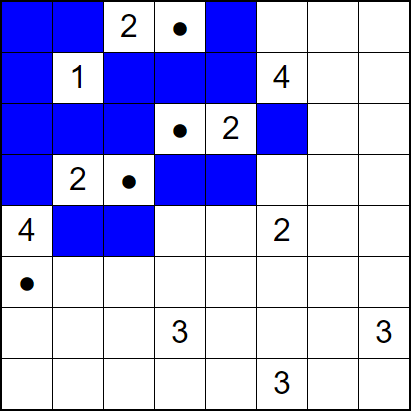

The game of Nurikabe is played on a rectangular grid of cells. Some cells contain numbers. When the game begins, all cells, other than the numbered cells, are empty, which is indicated by a cell filled with white. Game play consists of setting each cell to either an island or the sea.
Islands are indicated by either cells with a number in them or cells with a dot. Every island has exactly one numbered cell that indicates how many cells there are in that island. Cells in an island are all connected horizontally or vertically.
The sea is colored blue. A cell that is set to be part of the sea is filled with blue. There are two rules about the:
Nurikabe solutions are unique. There is only one possible solution to any given game.
Game play proceeds by clicking on cells. Each click toggles a cell from empty to sea to island. For example, if an empty cell is clicked on, it becomes sea. If sea is clicked on, it becomes an island. If an island cell is clicked on, it becomes empty. Cells with numbers in them are automatically island cells and are not clickable at all.